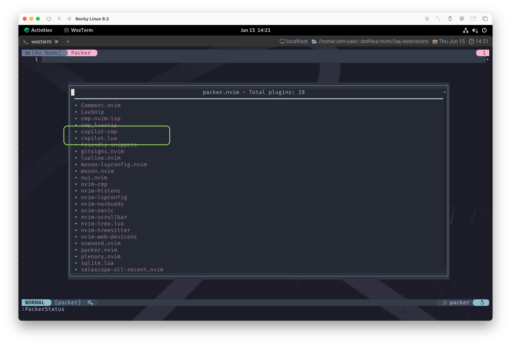
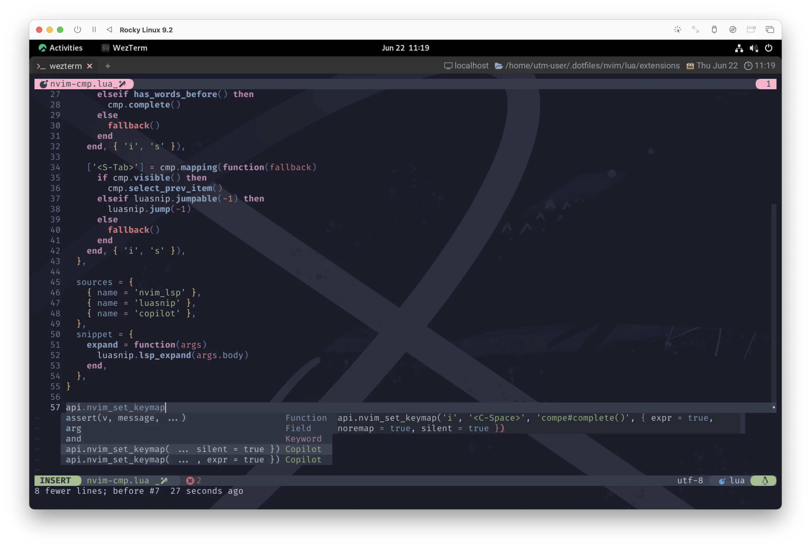
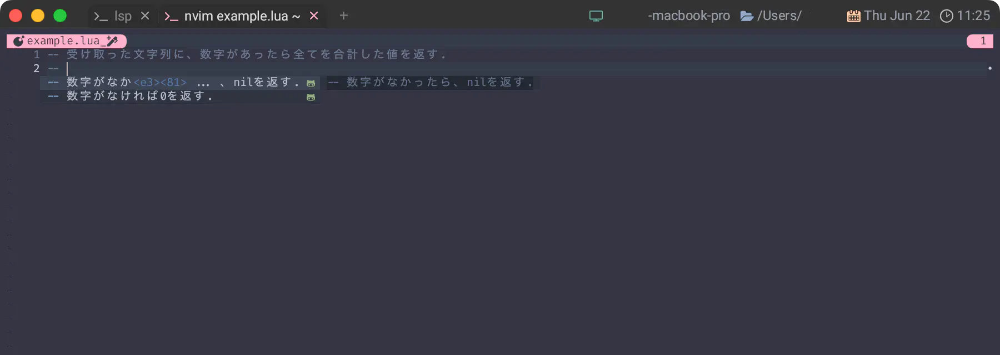
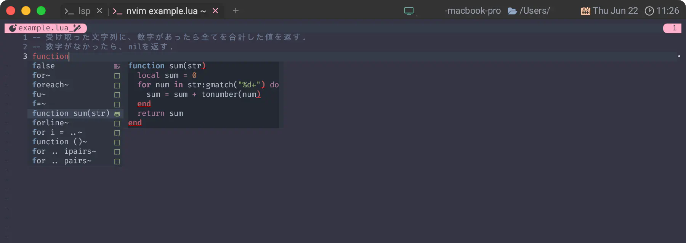
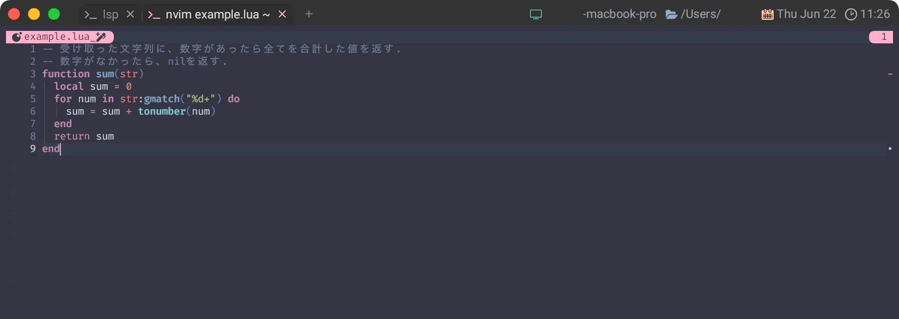
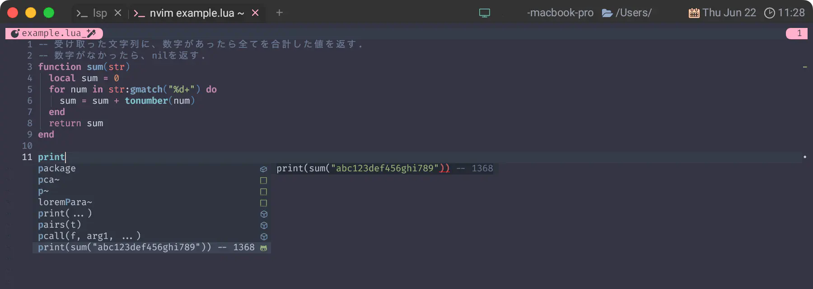
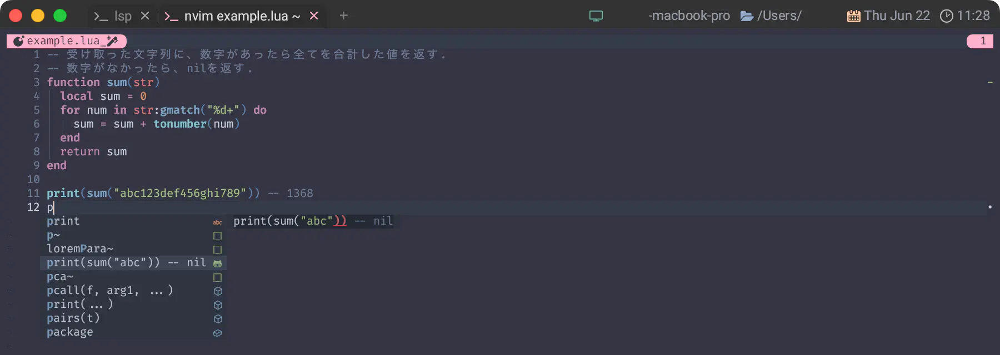
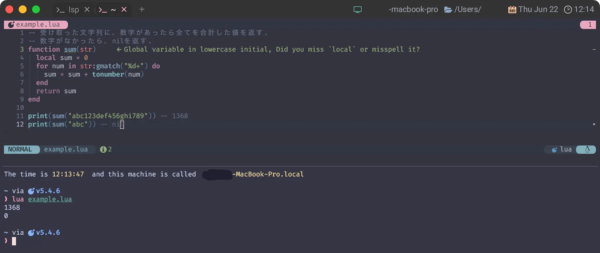
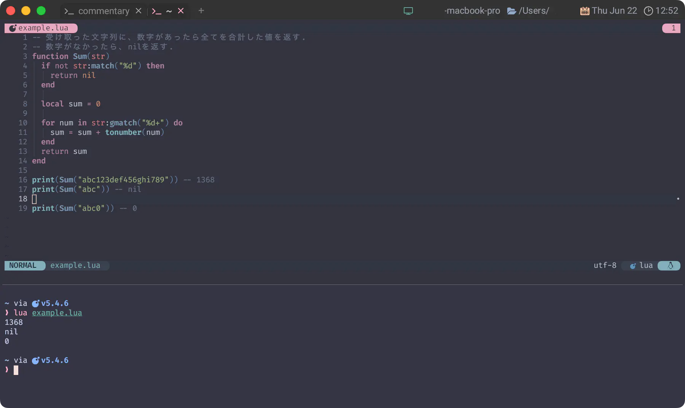

copilot-cmp
前回はcopilot.luaのおかげで、無事にGitHub Copilotから飛び立ったわけなんですが、
目的地であるnvim-cmpは、まだ受け入れ態勢が整っていません。
...急いで滑走路と管制塔を建設しましょう❗まじで👷♀️
This repository transforms https://github.com/zbirenbaum/copilot.lua into a cmp source.
このリポジトリは、https://github.com/zbirenbaum/copilot.lua を cmp のソースに変換します。
Copilot suggestions will automatically be loaded into your cmp menu as snippets and display their full contents when a copilot suggestion is hovered.
Copilot のサジェストは自動的にスニペットとして cmp メニューに読み込まれ、 copilot のサジェストにカーソルを合わせるとその全内容が表示されます。
copilot-cmpを導入することで、Copilotの提案をnvim-cmpで扱うことができるようになります😆
Boy, you’re gonna carry that weight 1
Carry that weight a long time
あーあ、 きみはその重荷を背負うんだ
その重みを ずっと背負うことになるんだよ
Setup
If you already have copilot.lua installed, you can install this plugin with packer as you would any other with the following code:
すでにcopilot.luaがインストールされている場合、以下のコードで他のプラグインと同様にpackerでインストールすることができます：
use {
"zbirenbaum/copilot-cmp",
after = { "copilot.lua" },
config = function ()
require("copilot_cmp").setup()
end
}
copilot_cmp単体では特にコンフィグも無いのでpackerからこのままsetup()しちゃっていいと思います。
Install
で、これをどこに入れようかちょっと考えちゃいますが、わたしはcmp一味に迎え入れることにしました😆
use {
'hrsh7th/nvim-cmp',
config = function() require 'extensions.nvim-cmp' end,
requires = {
'hrsh7th/cmp-nvim-lsp',
{
'L3MON4D3/LuaSnip',
tag = "v1.*",
run = 'make install_jsregexp',
config = function() require 'extensions.luasnip' end,
requires = 'saadparwaiz1/cmp_luasnip',
requires = { 'saadparwaiz1/cmp_luasnip', 'rafamadriz/friendly-snippets' },
},
+ {
+ 'zbirenbaum/copilot-cmp',
+ after = { 'copilot.lua' },
+ config = function() require('copilot_cmp').setup() end,
+ }
},
}
packer.nvim
ここでまたpackerを少しだけ補足します。
after
afterは以下のような説明がされています。
after = string or list, -- Specifies plugins to load before this plugin.
-- このプラグインの前にロードするプラグインを指定します。
この場合はcopilot.luaがロード後、続いてcopilot-cmpがロードされます。
PackerStatus
PackerStatusを覗いてみるとわかるんですが、
copilot.luaがロードされていない場合はcopilot-cmpもロードされません。
PackerStatusについては、
かろうじてQuickstartに記載があります。
-- Show list of installed plugins
-- インストールされているプラグインのリストを表示する
:PackerStatus
少し見えにくいかもしれませんが、(not loaded)と表示されていますね😉
逆に、copilot.luaがロードされると、copilot-cmpもロードされます。
ってしてからもう一回確認してみましょう。 
(not loaded)の表示が消えました😆
Config
それではコンフィグを組み込んでいきましょう。
suggestion / panel
It is recommended to disable copilot.lua's suggestion and panel modules, as they can interfere with completions properly appearing in copilot-cmp.
copilot.luaのsuggestionモジュールとpanelモジュールは、 copilot-cmpで適切に表示される補完を妨害することがあるので、無効にすることをお勧めします。
To do so, simply place the following in your copilot.lua config:
そのためには、copilot.luaの設定に以下を記述してください：
はい、入れましょう😉
require('copilot').setup {
+ suggestion = { enabled = false },
+ panel = { enabled = false },
copilot_node_command = 'node',
}
nvim-cmp
そしたらnvim-cmp側の調整も行いましょう😆
Tab Completion Configuration (Highly Recommended)
一個ほんとに自信のない項目があって、それがこれなんすわぁ😫
Unlike other completion sources, copilot can use other lines above or below an empty line to provide a completion. This can cause problematic for individuals that select menu entries with TAB.
他の補完ソースとは異なり、copilot は空行の上または下にある他の行を使用して補完を提供することができます。 このため、TAB を使用してメニュー項目を選択する場合に問題が発生することがあります。
This behavior is configurable via cmp's config and the following code will make it so that the menu still appears normally, but tab will fallback to indenting unless a non-whitespace character has actually been typed.
この動作は、cmp の config で設定できます。以下のコードでは、メニューは通常どおり表示されますが、 空白以外の文字が実際に入力されない限り、タブはインデントにフォールバックされます。
えっ...、ええっ...、なんですのん...❓
とりあえずこれ、Super-Tabの処理が既にいることもあって複雑なので、ファイルを分けて書いてみます。
local cmp = require 'cmp'
local luasnip = require 'luasnip'
local function has_words_before()
local line, col = unpack(vim.api.nvim_win_get_cursor(0))
return col ~= 0 and vim.api.nvim_buf_get_lines(0, line - 1, line, true)[1]:sub(col, col):match '%s' == nil
end
local function has_copilot()
if vim.api.nvim_buf_get_option(0, 'buftype') == 'prompt' then
return false
end
local line, col = unpack(vim.api.nvim_win_get_cursor(0))
return col ~= 0 and vim.api.nvim_buf_get_text(0, line - 1, 0, line - 1, col, {})[1]:match '^%s*$' == nil
end
local M = {}
M.tab = function(fallback)
if cmp.visible() then
cmp.select_next_item(has_copilot() and { behavior = cmp.SelectBehavior.Select } or {})
return
end
if luasnip.expand_or_jumpable() then
luasnip.expand_or_jump()
return
end
if has_words_before() then
cmp.complete()
return
end
fallback()
end
M.shift_tab = function(fallback)
if cmp.visible() then
cmp.select_prev_item()
return
end
if luasnip.jumpable(-1) then
luasnip.jump(-1)
return
end
fallback()
end
return M
local cmp = require 'cmp'
local act = require 'extensions.nvim-cmp-actions'
local map = cmp.mapping
cmp.setup {
mapping = map.preset.insert {
['<C-d>'] = map.scroll_docs(-4),
['<C-f>'] = map.scroll_docs(4),
['<C-Space>'] = map.complete(),
['<C-e>'] = map.abort(),
['<CR>'] = map.confirm { select = false },
['<Tab>'] = map(act.tab_proc, { 'i', 's' }),
['<S-Tab>'] = map(act.shift_tab_proc, { 'i', 's' }),
},
-- (以下略)
}
無理やりねじ込んではみたものの、 そもそも何が問題なのかをわたしがよくわかっていないので、まじで自信がありません。
"入力"がどうとかの話をしているのでInsertモードの話だとは思うんだけど...。
ま、まあおかしかったら直しておいてください😅
sources
nvim-cmpのsourcesに新人を紹介してあげましょう。はい、なかよし😆
sources = {
{ name = 'nvim_lsp' },
{ name = 'luasnip' },
+ { name = 'copilot' },
},
これでNeovimの空にGitHub Copilot 🛫 copilot.lua 🗺️ copilot-cmp 🛬 nvim-cmpという航路が完成しました❗
Contact
さあ、いよいよ繋がりました✈️
飛べるかな〜❓
飛んだよぉー❗😭
的確な提案であるかどうかは別として、ちゃんとCopilotからの提案が挙げられています😉
And in the middle of the celebrations
そして祝いの真っ只中に
I break down
僕は泣き崩れる
Uses cmp
前項を見て、「ノットエレガント💢」と思う人もいるでしょう。
Copilotの威力を真に感じられるのは、例えば以下のような方法です👩✈️
まずは適当にluaファイルを作って、:Takeoffしたあと、以下のようにコメントを入力してみましょう。
-- 受け取った文字列に、数字があったら全てを合計した値を返す.
ってやっただけで...、 
エレガント❗ 
ベリーエレガント❗❗ 
エルルルルェ ガンンンンンンンヌャスッ❗❗❗💨  
なんかもうエレガントっていうか、怖いこの人たち...。 
ところでねえ、コパイロットくん❗
これ「数字がなかったらnil返す」って言っときながら0返ってるよね😑
...だからね、こうしてみたらどうかな😆 
合計が0っていうケースも忘れないで😉
えっ❗マイナス値⁉️ ...それは忘れよう。
Spot in. Good night!
Copilotの実力は、なんだか測りきれない感もありますが、堪能はできましたね🤗
間違った提案はしてくるけど、それはこっちが気づいてあげればいいだけなので、温かく見守ってあげましょう😽
(逆に言うと、細かい誤りに自分で気付けないと...🙀)
Boy, you’re gonna carry that weight
Carry that weight a long time 3
あーあ、 きみはその重荷を背負うんだ
その重みを ずっと背負うことになるんだよ
1: Carry That Weight (by The Beatles): Paul McCartney によって書かれ、Lennon-McCartney によってクレジットされたこの曲は、 アルバムのクライマックスである Side-two メドレーの7曲目、最後尾に位置する曲である。 The Beatles の曲では珍しく、4人全員がコーラスでユニゾン・ヴォーカルをとっている。 この曲の前に "Golden Slumbers" があり、"The End" へと続いていく。
2: 中間のブリッジは、金管楽器、エレキギター、ヴォーカルで、"You Never Give Me Your Money" の冒頭を再現しているが、歌詞は異なっている。